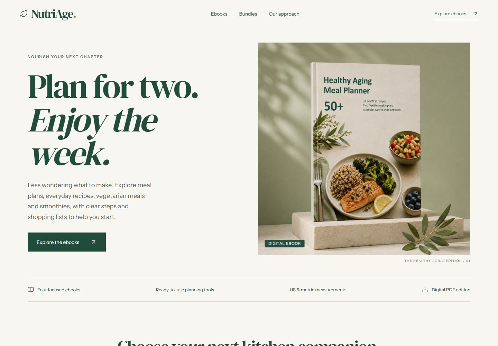
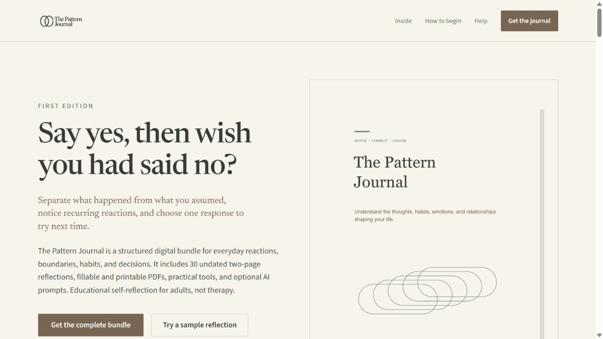
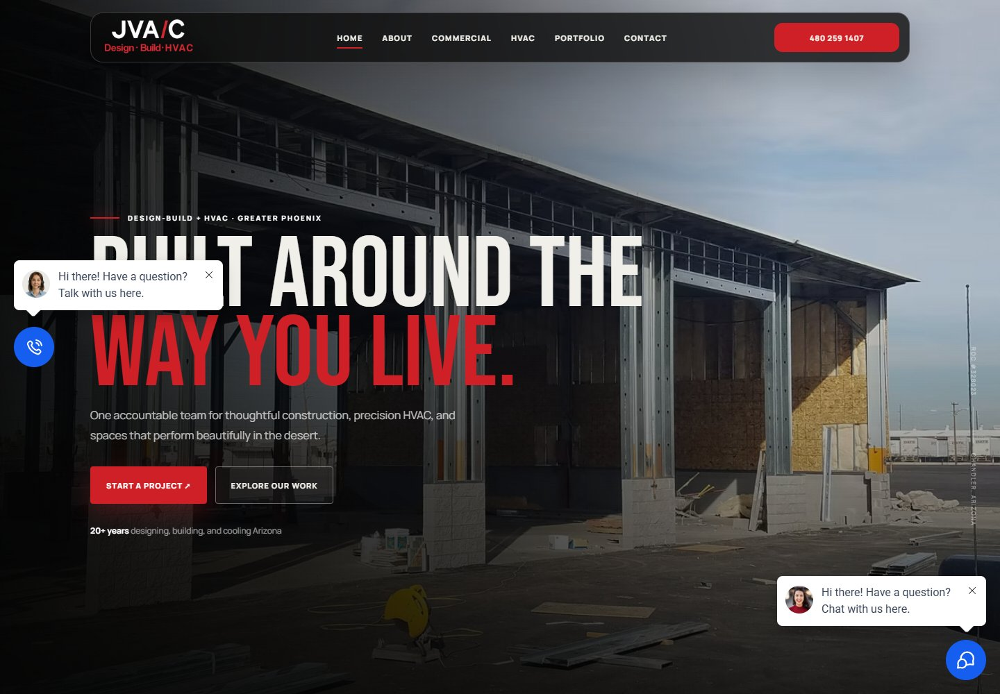
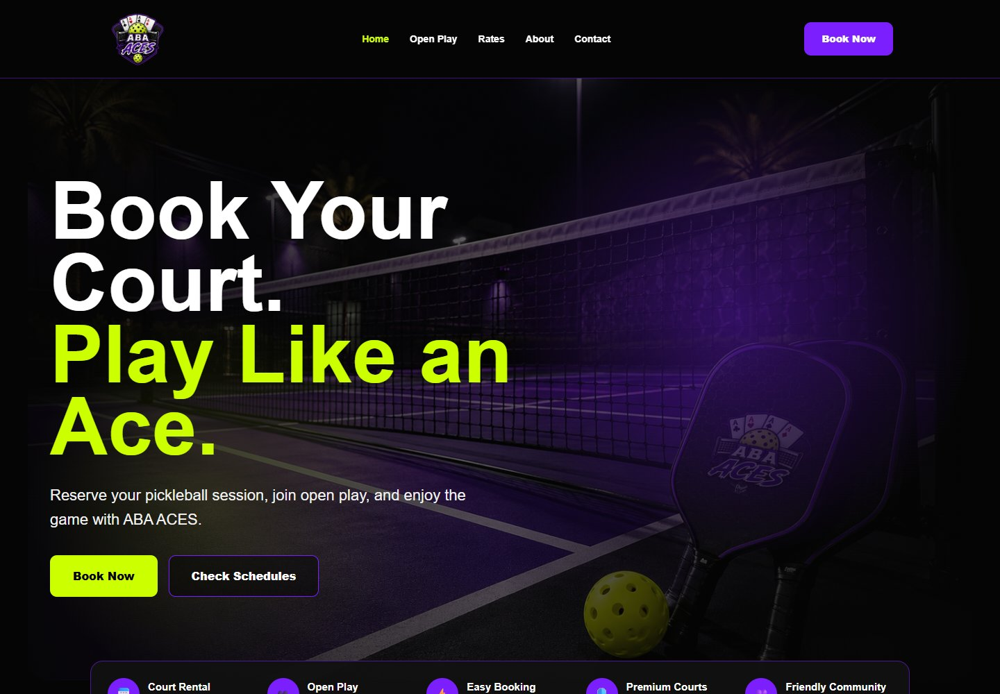

I check how people reach you and make sure each inquiry reaches the right person for follow-up.
CRM & AUTOMATION ARCHITECT · WEB DEVELOPER
Turn More Leads Into Customers— Automatically.
Stop Losing Leads. Automate Your Follow-Up.
I build websites and follow-up systems that help you respond faster, book more appointments, and keep customer details in one place. Less chasing leads. More time to run your business.
See how it worksHighLevel Certified Admin Built around your business
- GoHighLevel
- AI
- Workflow Automation
- Webhooks
- Integrations
I do not start with automation. I start with the business.
- 01
Understand
Find out where leads get lost and what slows your team down.
- 02
Map
Lay out each step from the first inquiry to a paying customer.
- 03
Plan
Decide what happens next, who handles it, and what can run automatically.
- 04
Build
Connect your forms, bookings, customer records, and follow-up messages.
- 05
Test
Check bookings, cancellations, and follow-ups before going live.
- 06
Launch
Get your system running and show your team how to use it.
CRM ArchitectureWorkflow AutomationAI SystemsCustomer JourneysWebhook IntegrationsProcess Design
ADVANCED AUTOMATION SYSTEMS
Inside the systems I build for businesses.
See how inquiries become bookings, reminders go out on time, and missed appointments get a follow-up. Open a business folder to explore these demonstration builds.
CRMAutomationAIIntegrations
FUNNEL DESIGN & IMPLEMENTATION
From first interest
to the next step.
Pages that guide visitors to book an appointment, send an inquiry, or leave feedback. Open an example to see every step.
SELECTED WEBSITES
Good design.
A clear next step.
Websites that explain what you offer and make it easy to buy, book, or get in touch. Explore the sites I’ve built below.

Digital product storefront
NutriAge
A storefront for practical meal-planning ebooks, recipes, vegetarian meals, and smoothies. Helps visitors compare individual guides and bundles before purchasing.
Ebook catalog / Product bundles / FAQs
Visit website (opens in a new tab)
Digital product landing page
The Pattern Journal
A focused landing page for a self-reflection journal bundle. Shows what is included, provides a sample entry, and guides visitors toward a one-time purchase.
Product preview / Bundle details / Purchase CTA
Visit website (opens in a new tab)
Construction & HVAC website
JVA/C Design
A service website bringing design-build, commercial construction, and HVAC under one roof. Presents services and selected work with clear paths to a project inquiry.
Service pages / Project portfolio / Contact
Visit website (opens in a new tab)
Sports & recreation website
ABA ACES Booking
A pickleball website that introduces court rentals and open-play sessions. Makes rates, schedules, and the steps to book a session easy to find.
Court rental / Open play / Booking entry points
Visit website (opens in a new tab)
Systems thinkingCRM architectureAI-assisted development
ABOUT PAT
Less busywork.
More time for your business.
I’m Pat Badiola, a CRM & Automation Architect, Web Developer, and HighLevel Certified Admin based in the Philippines. I work remotely with business owners and teams in the US, Canada, UK, and beyond.
When inquiries sit unanswered or follow-ups depend on memory, potential customers slip away. I build websites and CRM systems that keep customer details, appointments, and next steps together—so your team knows who needs a reply and when.
I start by understanding how you work. Then I set up the forms, booking pages, reminders, and follow-ups you need, and test them before launch. I use GoHighLevel and connect other tools when needed, while keeping important decisions with your team.
 View my HighLevel certification ↗
Opens in a new tab
View my HighLevel certification ↗
Opens in a new tab
HOW I APPROACH A NEW BUSINESS
Tell me what is not working.
Missed leads? Manual follow-ups? Tools that don’t talk to each other? Tell me where the work gets stuck. We’ll start with the problem, not a list of features.
I look for late replies, forgotten reminders, and inquiries that nobody has picked up.
I separate work that needs human judgment from repeatable tasks the system can handle safely.
I check where your team copies information by hand and which tools need to share customer details.
I lay out each step, who is responsible, and what needs to happen before the customer buys.
I keep people involved for judgment, exceptions, approvals, and important customer conversations.
LET’S CONNECT
Start a conversation.
Share the current problem, the tools you use, and what you want to improve. The next step is a conversation about the right system for your business.
For a direct conversation, use WhatsApp. For a detailed brief, email me. I’ll follow up there to discuss your needs and availability.
START WITH THE PROBLEM
Ready to spend less time chasing leads?
Tell me where follow-ups get missed or work piles up. We’ll talk through what could make things easier for you and your team.